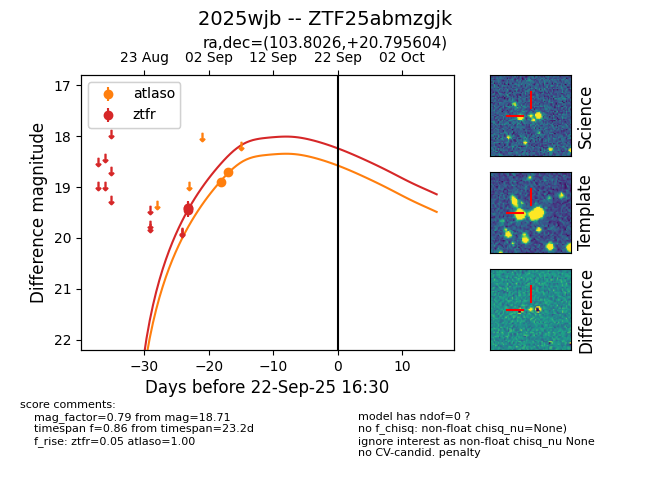
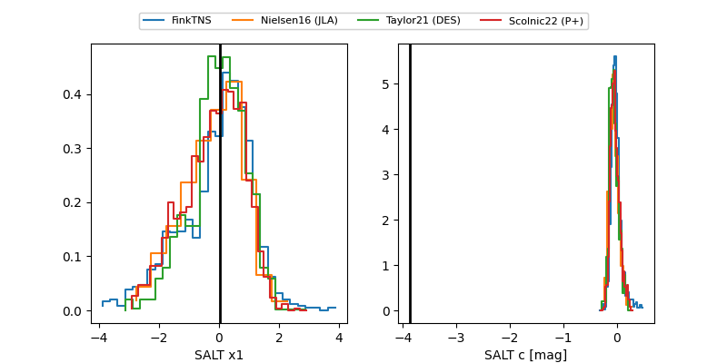

FINK: ZTF25abmzgjk
Lasair: ZTF25abmzgjk
ALeRCE: ZTF25abmzgjk
TNS: 2025wjb
YSE: 2025wjb
ZTF25abmzgjk (ztf,fink)
2025wjb (tns,yse)
equatorial (ra, dec) = (103.8026,+20.79560)
galactic (l, b) = (194.6414,+10.11273)


last atlaso=18.71, ztfr=19.45
2 atlaso, 3 ztfr detections